Adaptive Block FSAI (ABF) [1,2] is a novel and effective preconditioning
technique to solve
Symmetric Positive Definite (SPD) linear systems of equations  in a
parallel computing environment.
ABF is a generalization of the well-known Factored Sparse Approximate
Inverse (FSAI) [3] with
the key feature of providing a lower triangular factor
in a
parallel computing environment.
ABF is a generalization of the well-known Factored Sparse Approximate
Inverse (FSAI) [3] with
the key feature of providing a lower triangular factor
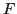
such that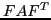
resembles as much as possible a block diagonal matrix. is to some extent an "inner preconditioner" which aims at decoupling every diagonal block one from another. At the single processor level, ABF may be linked to any other scalar preconditioner, or even direct solver, which therefore performs as an "outer preconditioner". Recently it has been noticed that graph partitioning techniques can be very conveniently used to improve the ABF performance reducing both the communication overhead and the number of iterations required for convegence, thus greatly enhancing the preconditioner scalability [4]. This suggests to look for a stronger connection between ABF and Domain Decomposition.Consider of computing an ABF preconditioner with a set of
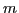
consecutive unknowns assigned to the current processor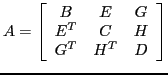 |
(1) |
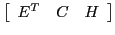
includes the rows assigned to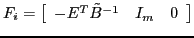 |
(2) |
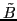
an approximation of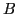
obtained through our adaptive technique. The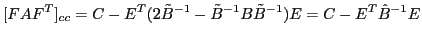 |
(3) |
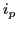
and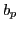
for the previous processors and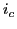
and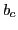
for the current processor, respectively. The matrices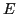
and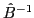
can be written in the following block form: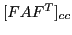
can be exactly factored and used as the outer preconditioner for the current processor.
Assume to make a standard domain decomposition of  , i.e. we exactly
factorize
, i.e. we exactly
factorize
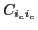
, compute the Schur complement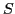
and solve an inner system with . The diagonal block of in processor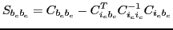 |
(6) |
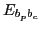
and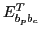
of eq. (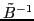
is exactly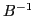
in the computation of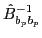
in (
Using a Schur complement domain decomposition in full leads to a more
accurate, though expensive,
approximation of  , while using a full matrix ABF preconditioner is
cheaper but, generally, less effective.
A good trade-off between the two approaches may be provided by using an
incomplete factorization for the "inner" blocks.
Let us number all the inner unknowns of each block first, and the
boundary unknowns second. The global
matrix
, while using a full matrix ABF preconditioner is
cheaper but, generally, less effective.
A good trade-off between the two approaches may be provided by using an
incomplete factorization for the "inner" blocks.
Let us number all the inner unknowns of each block first, and the
boundary unknowns second. The global
matrix  can be now written as:
can be now written as:
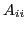
is a block diagonal matrix including the blocks,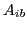
is a rectangular matrix with the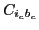
blocks, and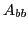
is a generally sparse matrix with the and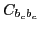
blocks.Numerical tests on large size applications show that the resulting DD-ABF preconditioner is generally more efficient than ABF, especially for a large number of processors, thus ensuring a much better scalability.
References:
[1] C. Janna, M. Ferronato and G. Gambolati, A Block FSAI-ILU parallel preconditioner for symmetric positive definite linear systems, SIAM Journal on Scientific Computing, 32 (5) (2010), pp. 2468-2484.
[2] C. Janna and M. Ferronato, Adaptive pattern research for Block FSAI preconditioners, SIAM Journal on Scientific Computing, 33 (6) (2011), pp. 3357-3380.
[3] L. Y. Kolotilina and A. Y. Yeremin, Factorized sparse approximate inverse preconditioning I. Theory, SIAM J. Matrix Anal. Appl., 14 (1993), pp. 45-58.
[4] C. Janna, M. Ferronato and N. Castelletto, Graph partitioning to improve the adaptive block FSAI parallel preconditioner, Computer Methods in Applied Mechanics and Engineering, submitted.